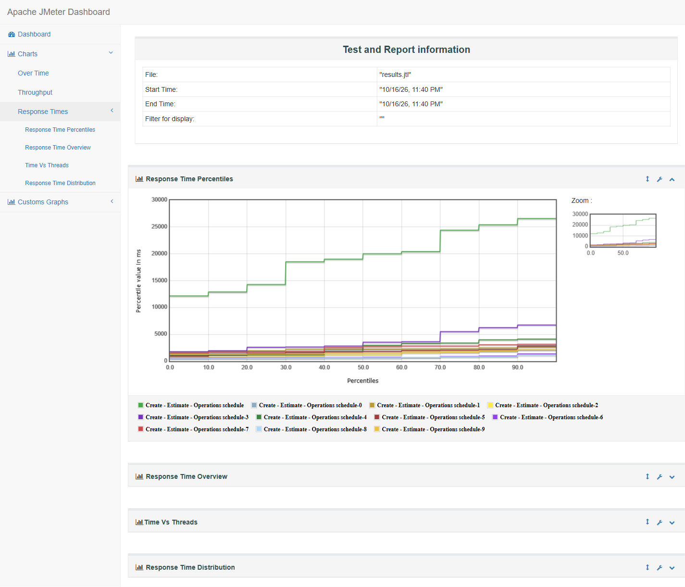

AI for delivery · Story deck
AI 驱动的 D365 F&O UAT 自动化闭环
Cowork 是老师，Scout 是测试员：出题、答题、判卷，并将功能、性能与根因分析串成一个可复跑闭环。


近期工作形成了一条完整的质量工程闭环：用可见 UI 执行端到端 UAT，以 JMeter 复现真实业务并发，再通过 Trace Parser 将性能现象下钻到 X++ 调用链与 SQL 访问模式。
CoworkTeacher · generate & assess
Microsoft ScoutAutomation & evidence
 D365 F&O UATVisible business process
Apache JMeterConcurrent load
D365 F&O UATVisible business process
Apache JMeterConcurrent load
 Trace ParserX++ & SQL diagnosis
Trace ParserX++ & SQL diagnosis
Cowork 是老师，Scout 是测试员：出题、答题、判卷，并将功能、性能与根因分析串成一个可复跑闭环。
某客户 D365 F&O 上线三次延期，根因始终是测试覆盖不足与问题暴露过晚。
读取真实业务数据，生成测试用例、预期结果、基础数据与性能模型。
通过可见 UI 执行流程、自动截图、记录结果，并编排 JMeter 与 Trace 分析。
用断言、截图、指标与只读核验判定结果，不以请求成功替代业务验收。
业务范围、步骤、数据、预期与门禁。
真实 D365 UI、真实编号与状态变化。
截图、错误原文、凭证、批次与库存。
Pass、Partial、Blocked 与整改顺序。
PPT 合并口径为 75 条：执行报告 65 条 + 原台账 MD 10 条；原报状态不等于独立验收结论。
S0000189 · CNY 501.30
空对象异常，计划到生产下达链路中断。
A10 维度错误，成本结算未完成。
保留调用栈，定位空对象异常；开发与计划顾问共同关闭。
修复 A10 维度继承与科目配置，完成 KWO002846 End。
补 AP 过账、AR 核销、总账对账与质量同步证据。
Create → Estimate → Operations scheduling；10 线程、10 秒爬升、每线程一次。零错误不等于容量认证。

环节计时用于定位下一步调查方向，不等于数据库或 CPU 根因。
多层 BOM 递归与逐行读写形成 N+1 访问。
累计数据库时间解释主要延迟。
没有任何单条 SQL 能解释 52 秒。
记录 DB calls 与 BOM 行数；核对 IWS 重复扫描；移出逐行 QMS 查询。
缓存 BOMVersion、Origin 与参数；批量写入 ProdBOM / InventTrans。
复用 BOM 展开结果；延迟加载展示字段；建立大 BOM 回归阈值。
功能与性能分别凭证判定：关闭 Firm / End 阻断，补 AP / AR / 总账闭环，约定 SLA 后同条件复测，最终由业务签字。
一条由业务结果驱动、可审计、可重复的验证链路
核心实物流和销售开票跑通；生产 End、采购发票、计划单 Firm 暴露真实缺陷。
平均 19.37 秒，P90 25.41 秒，所有 10 张生产订单最终 Scheduled。
成本估算约 52.2 秒，9,025 次数据库调用；核心是 BOM 递归与逐行访问。
把一次性的手工验证，转化成可复用的交付能力
在投产前识别计划单 Firm 空对象、生产过账维度、采购发票舍入科目、工作流和物料主数据问题，避免故障进入生产。
每个结论都有对象编号、状态、错误原文与证据支撑，避免把“未测”“被阻塞”误报成通过或失败。
Trace 证明主要问题是 9,025 次数据库调用和 BOM 递归，而不是某一条 SQL；减少无效索引调优与猜测。
10 用户、10 秒 ramp-up、唯一生产订单、状态关联与最终业务校验，使修复前后能够使用同一场景比较。
UI 截图、Excel 执行记录、Word/PDF 报告、JMeter JTL/HTML、ETL、PPT 和分析 JSON 可追溯到每个结论。
业务、测试、开发与 CSS 团队使用同一套事实：业务步骤、响应时间、X++ 方法、SQL 调用和整改优先级。
缺陷需要多轮转述和重复复现。
容易误判真正的累计调用成本。
验收、复测、审计成本高。
从订单状态直接追到 X++ 和 SQL。
Firm 缺陷不被错误纳入负载结论。
缓存、批量写入、移除逐行 QMS 查询、复测阈值。
GCP2 制造企业 ERP 端到端验证
17 Pass · 6 Partial Pass · 41 Blocked · 1 Not Run
阻塞项被保留为真实门禁，避免用绕过或人工改数制造“成功”结果。
数字为 Pass + Partial Pass；Blocked 保留为真实门禁，不做“成功形状”的绕过。
Confirmed / Received；采购质检 Pass / Approved。
Estimated → Released → Started → Reported as finished；累计报工 10。
批次追溯、质量审批、库位转移与数量守恒验证完成。
Reviewed → Reserved → Picked → Delivered → Invoiced，金额 501.30 CNY。
| ID | Area | Finding | Classification | Next action |
|---|---|---|---|---|
| UAT-MFG-002 | Planning | Planned order Firm throws “Object reference not set…” | Code defect | Fix Firm logic and retest GCP2-012841. |
| UAT-MFG-004 | Production accounting | End posting misses A10 business-unit dimension. | Config / data | Correct dimension inheritance, then End KWO002846. |
| UAT-P2P-004 | AP invoice | Rounding distribution has no valid ledger account. | Configuration | Configure account and repost INV5955-20261015. |
| UAT-P2P-003 | Purchase requisition | Item M350000084 lacks procurement category. | Master data | Maintain category and retest submission. |
| UAT-OTC-001 | Sales | Original order blocked by stocking method; rebuilt flow completed. | Closed | Retain S0000189 evidence as regression baseline. |
真实 D365 会话中的 Create → Estimate → Operations schedule
JMeter 5.6.3 · Temurin 17 · 10 threads · 10-second ramp-up · item FB00030110 · quantity 10 per order. Authentication and initial page rendering intentionally excluded.
The original Firm scenario was excluded after two single-user prechecks reproduced the object-reference defect. A valid Create/Estimate/Schedule replacement scenario was used instead, preventing a functional defect from contaminating the performance result.
从 189 MB ETL 到 X++ / SQL 根因
Inclusive durations are nested and must not be added together.
Slowest individual SQL ≈ 0.706s, insufficient to explain 52.2s.
BOM recursion and row-by-row processing generate thousands of small calls.
IWS extension exclusive CPU is small; most cost is downstream standard BOM and database work.
Cache BOM/BOMVersion lookups, batch writes, remove per-row QMS lookups, reuse expanded BOM results.
| X++ caller | Calls | Total SQL time | Max call | Interpretation |
|---|---|---|---|---|
| InventTrans::insert | 136 | 3.79s | 144ms | Row-by-row inventory transaction creation. |
| QMS…qmsJournalStatusDisplay | 810 | 1.98s | 66ms | Display/status lookup repeated per line. |
| InventTransOriginProdBOM::find… | 832 | 1.60s | 60ms | Repeated origin lookup; caching candidate. |
| ProdBOM::insert | 139 | 1.46s | 229ms | Batch persistence opportunity. |
| BomHierarchy::searchDownVersion | 1,011 | 2.30s | 101ms | BOMVersion recursion and repeated access. |
可复核、可审计、可用于复测
65 use cases, actual results, statuses, defects and evidence links.
Executive summary, controls, workflows, defect register and evidence index.
Master data, PO, production, QA, inventory, sales and accounting evidence.
Smoke/load runs, transaction samples, percentiles and reproducible launch scripts.
Configuration, sanitized request evidence, screenshots, business validation and caveats.
Per-order and per-step CSV for the ten concurrent production orders.
Method names, source paths, activity IDs, SQL payloads and timestamps.
Repeatable aggregation for call duration, self time, activities and SQL correlation.
Overview, redacted proof, X++/SQL details, root cause and improvement roadmap.